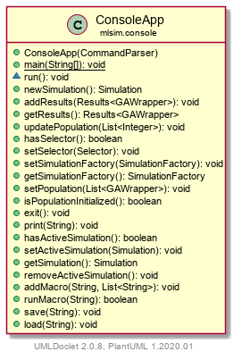

Package mlsim.console
Class ConsoleApp
- java.lang.Object
-
- mlsim.console.ConsoleApp
-
public class ConsoleApp extends java.lang.ObjectAn entry point to the application. Hosts a basic read-eval loop and the program state. Uses delegation with CommandParser to change it's state.
-
-
Constructor Summary
Constructors Constructor Description ConsoleApp(CommandParser parser)
-
Method Summary
All Methods Static Methods Instance Methods Concrete Methods Modifier and Type Method Description voidaddMacro(java.lang.String macroName, java.util.List<java.lang.String> macroCommands)Saves this macro command as macroName.voidaddResults(Results<GAWrapper> results)Adds the results of the last simulation.voidexit()Exits out of the simulation loop.Results<GAWrapper>getResults()Returns the results of the last simulation.SimulationgetSimulation()Returns the active simulation.SimulationFactorygetSimulationFactory()Return this SimulationFactory.booleanhasActiveSimulation()Checks if a simulation is currently running.booleanhasSelector()Checks if the selector is set.booleanisPopulationInitialized()Returns true if population is initialized.voidload(java.lang.String fileName)static voidmain(java.lang.String[] args)SimulationnewSimulation()Creates a new simulation with the saved parameters and puts the given solutions into it.voidprint(java.lang.String s)Prints this string to console.voidremoveActiveSimulation()Removes the current simulation with its (if exits) other state.(package private) voidrun()Method used to start the program which contains its main loop.booleanrunMacro(java.lang.String macroName)Runs a macro with the given name.voidsave(java.lang.String fileName)voidsetActiveSimulation(Simulation sim)Adds a new simulation.voidsetPopulation(java.util.List<GAWrapper> population)Sets the current population.voidsetSelector(Selector newSelector)Sets this ConsoleApp's current selector.voidsetSimulationFactory(SimulationFactory factory)Sets a new SimulationFactory.voidupdatePopulation(java.util.List<java.lang.Integer> fitness)Update the population, given this fitness.
-
-
-
Constructor Detail
-
ConsoleApp
public ConsoleApp(CommandParser parser)
-
-
Method Detail
-
main
public static void main(java.lang.String[] args)
-
run
void run()
Method used to start the program which contains its main loop.
-
newSimulation
public Simulation newSimulation()
Creates a new simulation with the saved parameters and puts the given solutions into it. (basically a convenience method so you would not have to get SimulationFactory every time)- Returns:
- New simulation.
-
addResults
public void addResults(Results<GAWrapper> results)
Adds the results of the last simulation.- Parameters:
results- Results of the simulation to be saved.
-
getResults
public Results<GAWrapper> getResults()
Returns the results of the last simulation.- Returns:
- Saved results of the last simulation.
-
updatePopulation
public void updatePopulation(java.util.List<java.lang.Integer> fitness)
Update the population, given this fitness.- Parameters:
fitness- Fitness
-
hasSelector
public boolean hasSelector()
Checks if the selector is set.- Returns:
- True if it has an active selector.
-
setSelector
public void setSelector(Selector newSelector)
Sets this ConsoleApp's current selector.- Parameters:
newSelector- New Selector to replace the current one.
-
setSimulationFactory
public void setSimulationFactory(SimulationFactory factory)
Sets a new SimulationFactory.- Parameters:
factory- The factory containing desired parameters of the simulation.
-
getSimulationFactory
public SimulationFactory getSimulationFactory()
Return this SimulationFactory.- Returns:
- Saved SimulationFactory.
-
setPopulation
public void setPopulation(java.util.List<GAWrapper> population)
Sets the current population.- Parameters:
population- New current population.
-
isPopulationInitialized
public boolean isPopulationInitialized()
Returns true if population is initialized.
-
exit
public void exit()
Exits out of the simulation loop.
-
print
public void print(java.lang.String s)
Prints this string to console. (also provides a single point through which every command's output goes.)- Parameters:
s- The string to print.
-
hasActiveSimulation
public boolean hasActiveSimulation()
Checks if a simulation is currently running.- Returns:
- True if there is an active simulation.
-
setActiveSimulation
public void setActiveSimulation(Simulation sim)
Adds a new simulation.
-
getSimulation
public Simulation getSimulation()
Returns the active simulation.- Returns:
- Active simulation
-
removeActiveSimulation
public void removeActiveSimulation()
Removes the current simulation with its (if exits) other state.
-
addMacro
public void addMacro(java.lang.String macroName, java.util.List<java.lang.String> macroCommands)Saves this macro command as macroName.- Parameters:
macroName- Name of this macro.macroCommands- Commands that compose this macro.
-
runMacro
public boolean runMacro(java.lang.String macroName)
Runs a macro with the given name. Returns false if the macro with the given name does not exist. If there was an error during one the parsing of one of commands, stops the execution of a macro.- Parameters:
macroName- Name of the macro.- Returns:
- True if macro was run, false if a macro with this name does not exist.
-
save
public void save(java.lang.String fileName) throws java.io.IOException- Throws:
java.io.IOException
-
load
public void load(java.lang.String fileName) throws java.io.IOException- Throws:
java.io.IOException
-
-